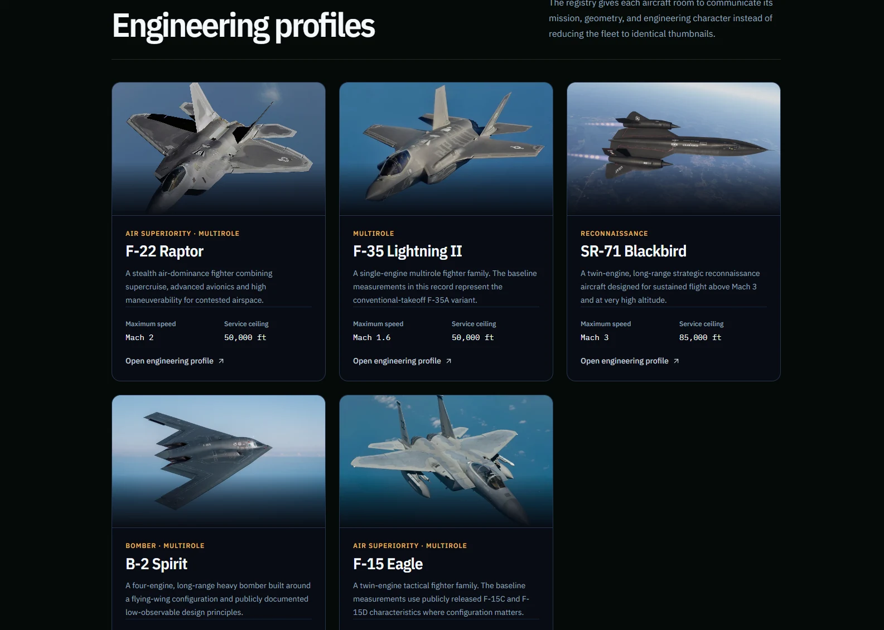
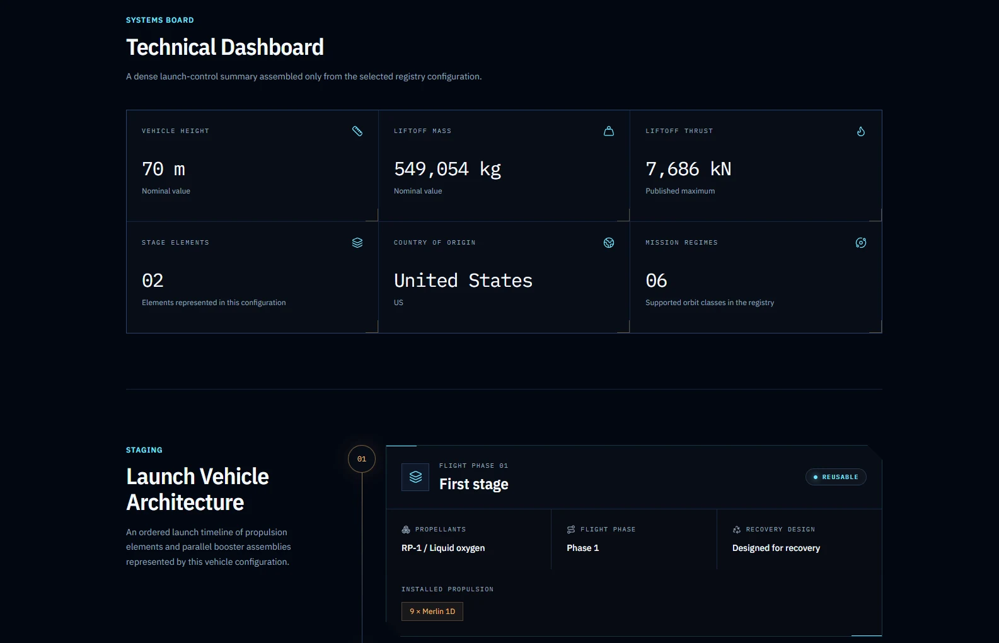
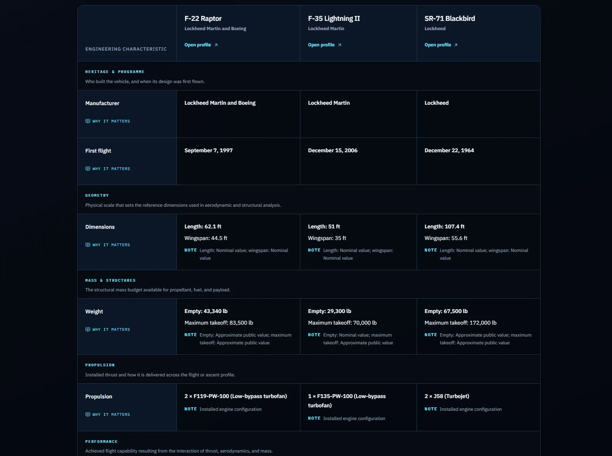
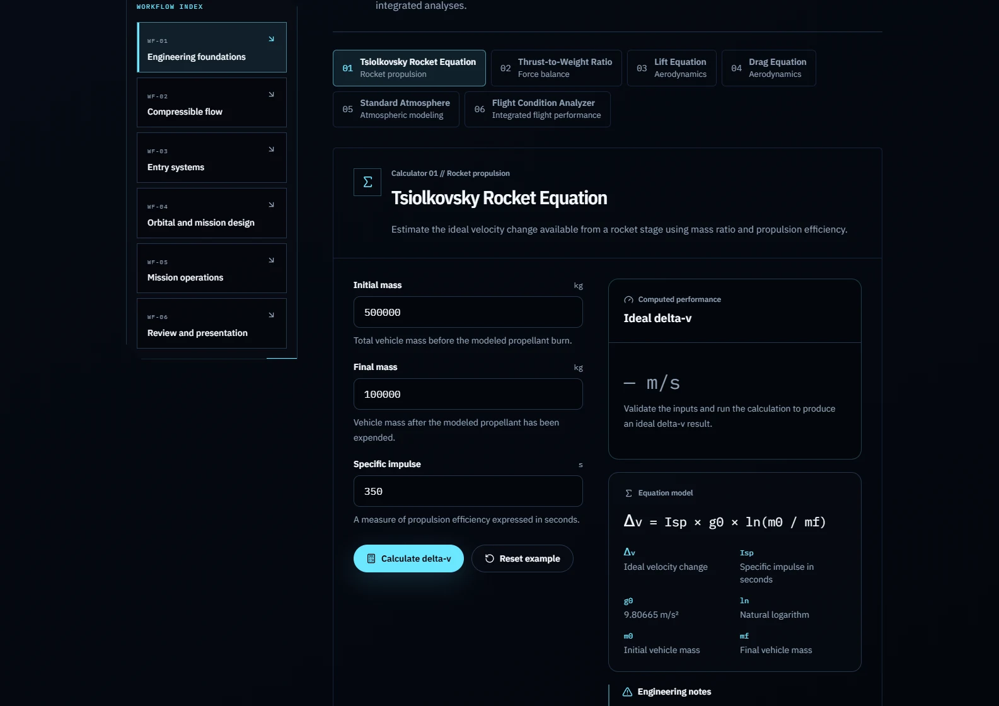
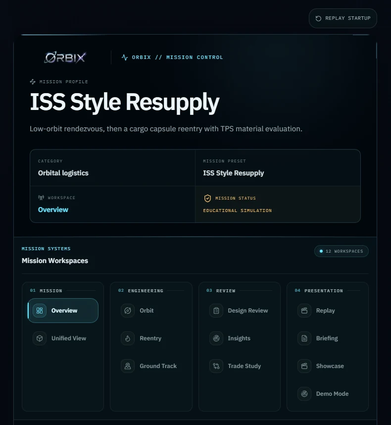

ORBIX
I designed and built ORBIX as a personal aerospace software project. It puts real aircraft and launch vehicles, the engineering math behind them, and full mission simulations into one application, and it keeps every number attached to the source and the units it came with.
Why I built ORBIX
I built ORBIX because I wanted one place to look through the information I needed on aircraft and launch vehicles, instead of jumping between different sources every time. I also wanted that information to be useful once it was there, so values keep their units, qualifiers and sources with them.
From there it grew into more than a vehicle reference. The Engineering Lab has 33 modules with calculators and analysis tools you can put your own numbers into, and the mission side lets you take that information further into mission analysis, preparation, simulation and replay.
What ORBIX became
Ten vehicles and a growing set of engineering tools.
The application is organized around ten vehicles: five aircraft, the F-22, F-35, F-15, B-2 and SR-71, and five launch vehicles, Falcon 9, Falcon Heavy, Saturn V, SLS and Starship. Each one has a discovery page and a full engineering profile.
On top of that sit the comparison engine, the Engineering Lab, mission control with replay, a showcase, and a learning section for the underlying theory.


Keeping the numbers honest
Public sources do not always agree. An empty mass can mean one configuration in one source and a slightly different one somewhere else, and the units and assumptions behind a figure are not always shown next to it. Put two vehicles side by side that way and you can end up comparing values that were never measured in the same way.
This is the part of ORBIX a screenshot hides. A vehicle in ORBIX is not a page of text. It is a configuration: a set of values, each with its unit, its qualifier, and the source it came from. The profile pages, the comparison engine and the mission tools all read from that same configuration.
That is what makes the comparison honest. When the table says an F-22 has an empty mass of 43,340 lb, it also says that value is an approximate public figure, and it will not quietly compare it against a nominal value from another aircraft without telling you.

The Engineering Lab
33 modules across six workflows.
The Lab is where ORBIX stops being a reference and starts being a tool. It holds 33 modules, roughly 20 of them calculators and 22 analysis tools, grouped into six workflows: engineering foundations, compressible flow, entry systems, orbital and mission design, mission operations, and review and presentation.
Each module shows its inputs with units, the equation being solved, and what every variable in that equation means. The calculation is visible instead of being hidden behind a result, and the inputs are yours to set, so you are not limited to the vehicle data already in ORBIX.

Mission Control and Replay
Mission Control takes a mission preset, an ISS-style resupply for example, and opens it as a full workspace: the mission profile, the orbital visualization, the phase sequence, and the report that comes out of it. The phases run from launch and departure through orbit transfer and maneuver, and each one resolves from the mission configuration rather than being written in by hand.
Replay is the other half. Once a mission has run you can play it back and step through what happened, which is how you check that a change to a calculation actually did what you expected across the whole sequence.

Making it reliable as it grew
Because everything reads from the same vehicle configurations and the same calculation code, a change in one place can reach a long way. Adjust how a unit is handled and you have potentially touched every profile, the comparison engine, and half the Lab. At that size, checking the effect by clicking through the application is no longer practical, so the tests do it instead.
The unit tests cover the calculations and the data handling. The browser tests drive the real interface, including an accessibility suite and a visual set that catches unintended layout changes. All of it runs in GitHub Actions, and the build has to pass before anything reaches Vercel.
Final validation run
- Unit tests
- 936 of 936 passing (Vitest)
- Browser tests
- 463 passed, 359 skipped, 0 failed (Playwright)
- Accessibility
- 131 passed, 10 skipped
- Visual regression
- 28 of 28
- Build
- Clean production build
Where I want to take it
ORBIX is still a project I am developing. There are parts I want to expand, calculations I want to improve, and more I want to do with the mission tools. What is on this page is where the project is now, not where I expect it to stop.
I wanted ORBIX in this portfolio so colleges can see what it does today, how much work has gone into it, and the direction I want to keep taking it.
As the application grew, I also had to change how I worked on it. The same vehicle data and calculations are used in several places, so automated tests became important for catching problems that would be easy to miss by checking pages one at a time.
Built with
Next.js 16 · React · TypeScript · Tailwind CSS 4 · Vitest · Playwright · GitHub Actions · Vercel